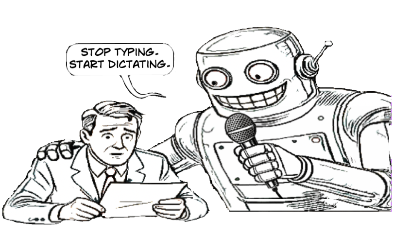

smart dictation for MacOSIntelligentes Diktieren für MacOSDictado Inteligente para
MacOS

Your Thoughts, Deine Gedanken, Tus Pensamientos, effortlessly mühelos sin
esfuerzo transcribedtranskribierttranscritos
Why spend time typing when you can dictate rough thoughts and turn them into perfectly
formatted prose?Warum Zeit mit Tippen verbringen, wenn du grobe Gedanken
diktieren und in perfekte Prosa verwandeln kannst?¿Por qué perder tiempo
escribiendo cuando puedes dictar ideas y convertirlas en prosa perfectamente formateada?
See it in ActionIn Aktion sehenVer en Acción
Local & PrivateLokal & PrivatLocal y Privado
- No cloud APIs to OpenAI or Google, no subscription bills, and no quota anxiety.
All transcription can be done entirely natively on your Mac using `SFSpeechRecognizer`, and text
rewrites can be handled by your own localized instances of `Ollama` or `Ollama Cloud`.
- Keine Cloud-APIs zu OpenAI oder Google, keine Abo-Rechnungen und keine
Quotenangst. Die gesamte Transkription kann komplett nativ auf deinem Mac mit `SFSpeechRecognizer`
durchgeführt werden, und Text-Umschreibungen können von deinen eigenen lokalen `Ollama`-Instanzen
oder der `Ollama Cloud` verarbeitet werden.
- Sin APIs en la nube de OpenAI o Google, sin facturas de suscripción y sin
ansiedad de cuotas. Toda la transcripción se puede hacer de forma completamente nativa en tu Mac
usando `SFSpeechRecognizer`, y las reescrituras de texto pueden ser manejadas por tus propias
instancias locales de `Ollama` o `Ollama Cloud`.
The WorkflowDer WorkflowEl Flujo de Trabajo
PRESS THE HOTKEY.DRÜCKE DEN
HOTKEY.PRESIONA EL ATAJO TECLADO.
THE FLOATING OVERLAY APPEARSDAS SCHWEBENDE OVERLAY ERSCHEINTAPARECE LA CAPA
FLOTANTE
recording indicatorAufnahme-IndikatorIndicador de grabación
🔴 ➖
microfon levelMikrofonpegelNivel del micrófono
SPEAK YOUR THOUGHTSSPRICH DEINE GEDANKENEXPRESA
TUS PENSAMIENTOS
YOU ARE RECORDING.DU NIMMST
AUF.ESTÁS GRABANDO.
THE APP TRANSCRIBES THE AUDIODIE APP TRANSKRIBIERT DAS AUDIOLA APP TRANSCRIBE EL
AUDIO
PRESS THE GLOBAL HOTKEY WHEN DONEDRÜCKE DEN GLOBALEN HOTKEY NACH ABSCHLUSSPRESIONA
EL ATAJO GLOBAL AL TERMINAR
⏳
thinking...denkt
nach...pensando...
done!fertig!¡listo!
PASTE RESULTERGEBNIS EINFÜGENPEGAR RESULTADO
The
Writing StaffDas Schreib-TeamEl Equipo de
Redacción
Specialized personas for every creative
contextSpezialisierte Personas für jeden kreativen KontextPersonajes especializados para cada contexto creativo
SMART ✨
YOUR BASELINE DIGITAL ASSISTANT. IT CLEANS UP DICTATION, ADDING COMMAS AND
PERIODS BASED ON NATURAL CADENCE, REMOVING FILLER WORDS (LIKE "UM"), AND HANDLING
SELF-CORRECTIONS INTUITIVELY. CRUCIALLY, IT **DOES NOT** EXECUTE CONVERSATIONAL COMMANDS —
IT SIMPLY REWRITES WHAT YOU SAID INTO CLEAN PROSE.
DEIN GRUNDLEGENDER DIGITALER ASSISTENT. ER BEREINIGT DIKTATE, FÜGT KOMMAS
UND PUNKTE BASIEREND AUF NATÜRLICHER KADENZ HINZU, ENTFERNT FÜLLWÖRTER (WIE "ÄHM") UND
BEHANDELT SELBSTKORREKTUREN INTUITIV. VOR ALLEM FÜHRT ER **KEINE** KONVERSATIONSBEFEHLE AUS
— ER SCHREIBT DEINE WORTE EINFACH IN SAUBERE PROSA UM.
TU ASISTENTE DIGITAL BASE. LIMPIA EL DICTADO, AGREGANDO COMAS Y PUNTOS
BASADOS EN LA CADENCIA NATURAL, ELIMINANDO PALABRAS DE RELLENO (COMO "EHH") Y MANEJANDO
AUTOCORRECCIONES INTUITIVAMENTE. CRUCIALMENTE, **NO** EJECUTA COMANDOS CONVERSACIONALES —
SIMPLEMENTE REESCRIBE LO QUE DIJISTE EN PROSA LIMPIA.
HYPE MAN 🚀
BUILT FOR THE LINKEDIN HUSTLE. IT BREAKS YOUR TEXT INTO HIGH-ENGAGEMENT,
SINGLE-LINE PARAGRAPHS SCATTERED WITH RELEVANT EMOJIS. HOOK-DRIVEN AND UNAPOLOGETICALLY
ENERGETIC.
GEMACHT FÜR DEN LINKEDIN-HUSTLE. ES TEILT DEINEN TEXT IN HOCH-ENGAGIERENDE,
EINZEILIGE ABSÄTZE AUF, GESPICKT MIT PASSENDEN EMOJIS. HOOK-GETRIEBEN UND KOMPROMISSLOS
ENERGISCH.
CREADO PARA EL AJETREO DE LINKEDIN. DIVIDE TU TEXTO EN PÁRRAFOS DE UNA SOLA
LÍNEA DE ALTA PARTICIPACIÓN, ESPARCIDOS CON EMOJIS RELEVANTES. BASADO EN GANCHOS Y SIN
DISCULPAS ENERGÉTICO.
TECH FOUNDER 💻
DIRECT, OPTIMISTIC SILICON VALLEY JARGON. IT CONVERTS LONG RAMBLES INTO
PUNCHY BULLET POINTS EMPHASIZING "LEVERAGE", "KPIS", AND "IMPACT".
DIREKTER, OPTIMISTISCHER SILICON VALLEY-JARGON. ES VERWANDELT LANGE
SCHWEIFEREIEN IN KNACKIGE BULLET-POINTS UND BETONT "LEVERAGE", "KPIS" UND "IMPACT".
JERGA DIRECTA Y OPTIMISTA DE SILICON VALLEY. CONVIERTE LARGOS DESVARIOS EN
PUNTOS CLAVE ENFATIZANDO "APALANCAMIENTO", "KPIS" E "IMPACTO".
GONZO 🌵
TRANSLATES YOUR MUNDANE BRAIN DUMP INTO A WILD, ERRATIC, GONZO JOURNALISM
POST FULL OF VIVID METAPHORS AND CYNICAL WIT.
ÜBERSETZT DEINEN ALLTÄGLICHEN BRAIN-DUMP IN EINEN WILDEN, ERRATISCHEN
GONZO-JOURNALISMUS-BEITRAG VOLLER LEBENDIGER METAPHERN UND ZYNISCHEM WITZ.
TRADUCE TU DESCARGA MENTAL MUNDANA EN UNA PUBLICACIÓN DE PERIODISMO GONZO
SALVAJE Y ERRÁTICO, LLENA DE METÁFORAS VÍVIDAS Y UN INGENIO CÍNICO.
C-SUITE 👔
HYPER-PROFESSIONAL EXECUTIVE DIPLOMAT SPEAK. IT SOFTENS BLUNT OR ANGRY
REQUESTS INTO HIGHLY POLISHED, PERFECTLY STRUCTURED CORPORATE COMMUNICATIONS. IT GUARDS YOUR
TIME WHILE SOUNDING APPROPRIATELY POLITE.
HYPERPROFESSIONELLE EXECUTIVE-DIPLOMATEN-SPRACHE. ES MILDERT STUMPFE ODER
WÜTENDE ANFRAGEN ZU HOCHGLANZPOLIERTER, PERFEKT STRUKTURIERTER UNTERNEHMENSKOMMUNIKATION AB.
ES SCHÜTZT DEINE ZEIT UND KLINGT DABEI ANGEMESSEN HÖFLICH.
LENGUAJE DIPLOMÁTICO EJECUTIVO HIPERPROFESIONAL. SUAVIZA SOLICITUDES
BRUSCAS O ENFADADAS EN COMUNICACIONES CORPORATIVAS ALTAMENTE PULIDAS Y PERFECTAMENTE
ESTRUCTURADAS. PROTEGE TU TIEMPO MIENTRAS SUENA APROPIADAMENTE EDUCADO.
BETTER PROMPT 🎯
YOUR INSTANT PROMPT ENGINEER. IT CAPTURES A MESSY VERBAL LAYOUT OF WHAT YOU
WANT AN AI TO DO, AND PERFECTLY STRUCTURES IT INTO AN OPTIMIZED SYSTEM PROMPT FOR MAXIMUM
CONTEXT AND ACCURACY.
DEIN SOFORTIGER PROMPT-ENGINEER. ER ERFASST EIN UNORDENTLICHES VERBALES
LAYOUT DESSEN, WAS EINE KI TUN SOLL, UND STRUKTURIERT ES PERFEKT IN EINEN OPTIMIERTEN
SYSTEM-PROMPT FÜR MAXIMALEN KONTEXT UND GENAUIGKEIT.
TU INGENIERO DE PROMPTS INSTANTÁNEO. CAPTURA UN DISEÑO VERBAL DESORDENADO
DE LO QUE QUIERES QUE HAGA UNA IA, Y LO ESTRUCTURA PERFECTAMENTE EN UN PROMPT DE SISTEMA
OPTIMIZADO PARA MÁXIMO CONTEXTO Y PRECISIÓN.
PSYCHOANALYST 🛋️
A PERSONAL THERAPY SESSION IN YOUR MENU BAR. INSTEAD OF TRANSCRIBING WHAT
YOU SAID, IT OUTPUTS A PROFESSIONAL REPORT EVALUATING YOUR PSYCHOLOGICAL STATE AND OUTLINING
CONCRETE NEXT STEPS FOR THERAPY BASED ON YOUR DICTATION.
EINE PERSÖNLICHE THERAPIESITZUNG IN DEINER MENÜLEISTE. ANSTATT ZU
TRANSKRIBIEREN, WAS DU GESAGT HAST, GIBT ES EINEN PROFESSIONELLEN BERICHT AUS, DER DEINEN
PSYCHOLOGISCHEN ZUSTAND BEWERTET UND KONKRETE NÄCHSTE SCHRITTE FÜR DIE THERAPIE BASIEREND
AUF DEINEM DIKTAT SKIZZIERT.
UNA SESIÓN DE TERAPIA PERSONAL EN TU BARRA DE MENÚ. EN LUGAR DE TRANSCRIBIR
LO QUE DIJISTE, EMITE UN INFORME PROFESIONAL QUE EVALÚA TU ESTADO PSICOLÓGICO Y DESCRIBE
PASOS CONCRETOS A SEGUIR PARA LA TERAPIA EN BASE A TU DICTADO.
HAUSMEISTER 🧹
SPECIFICALLY DESIGNED TO GENERATE PROFESSIONAL PROMPT-STYLE ESSAY REQUESTS
FROM MESSY BRAIN DUMPS. IT LAYS OUT THE RESULTING PROMPT INTO 5 STRUCTURED POINTS: PERSONA,
CONTEXT...
SPEZIELL ENTWICKELT, UM PROFESSIONELLE ESSAY-ANFRAGEN IM PROMPT-STIL AUS
UNORDENTLICHEN BRAIN-DUMPS ZU GENERIEREN. ES GLIEDERT DEN RESULTIERENDEN PROMPT IN 5
STRUKTURIERTE PUNKTE: PERSONA, KONTEXT...
DISEÑADO ESPECÍFICAMENTE PARA GENERAR SOLICITUDES DE ENSAYOS PROFESIONALES
ESTILO PROMPT DESDE DESCARGAS MENTALES DESORDENADAS. DISEÑA EL PROMPT RESULTANTE EN 5 PUNTOS
ESTRUCTURADOS: PERSONA, CONTEXTO...
GHERKIN 🥒
FOR THE DEVELOPERS AND PRODUCT MANAGERS: AUTOMATICALLY STRUCTURES YOUR
INPUT STRICTLY AROUND BEHAVIORAL DRIVEN DEVELOPMENT (BDD) KEYWORDS (SCENARIO, GIVEN, WHEN,
THEN, AND/BUT).
FÜR DIE ENTWICKLER UND PRODUKTMANAGER: STRUKTURIERT DEINE EINGABEN
AUTOMATISCH STRENG NACH SCHLÜSSELWÖRTERN DES BEHAVIORAL DRIVEN DEVELOPMENT (BDD) (SZENARIO,
GEGEBEN, WENN, DANN, UND/ABER).
PARA LOS DESARROLLADORES Y GERENTES DE PRODUCTO: ESTRUCTURA AUTOMÁTICAMENTE
TU ENTRADA ESTRICTAMENTE ALREDEDOR DE PALABRAS CLAVE DE DESARROLLO GUIADO POR COMPORTAMIENTO
(BDD) (ESCENARIO, DADO, CUÁNDO, ENTONCES, Y/PERO).
RADIO 🎙️
TRANSFORMS YOUR INPUT INTO A LIVELY, SINGLE CONTINUOUS MONOLOGUE SCRIPT FIT
FOR A 1960S-70S RADIO SHOW. FEATURES A WARM MID-CENTURY AMERICAN ACCENT, CONVERSATIONAL
ASIDES, AND EVEN INVENTS HYPERBOLIC FICTIONAL SPONSOR READS.
VERWANDELT DEINE EINGABEN IN EIN LEBENDIGES, EINZELNES KONTINUIERLICHES
MONOLOG-SKRIPT, PASSEND: FÜR EINE RADIOSHOW DER 1960ER-70ER JAHRE. BIETET EINEN WARMEN
AMERIKANISCHEN AKZENT AUS DER MITTE DES JAHRHUNDERTS, KONVERSATIONELLE EINSCHÜBE UND
ERFINDET SOGAR HYPERBOLISCHE FIKTIVE SPONSOREN-LESER.
TRANSFORMA TU ENTRADA EN UN GUION MONOLOGICO CONTINUO Y VIGOROSO APTO PARA
UN PROGRAMA DE RADIO DE LOS AÑOS 1960-70. PRESENTA UN CÁLIDO ACENTO ESTADOUNIDENSE DE
MEDIADOS DE SIGLO, APARTES CONVERSACIONALES E INCLUSO INVENTA LECTURAS HIPERBÓLICAS DE
PATROCINADORES FICTICIOS.
ZERO ⚙️
A VETERAN PRODUCT PRINCIPAL PERSONA FOCUSED ON STRIPPING AWAY "CORPORATE
THEATER" AND REPLACING IT WITH DIRECT EXECUTION MECHANICS. IDENTIFIES THE HIDDEN BOTTLENECK,
CONSTRUCTS A SPECIFIC TACTICAL NEXT STEP.
EINE VETERANEN-PRODUKTPRINZIPAL-PERSONA, DIE DARAUF AUSGERICHTET IST,
"CORPORATE THEATER" ZU ENTFERNEN UND ES DURCH DIREKTE AUSFÜHRUNGSMECHANIKEN ZU ERSETZEN.
IDENTIFIZIERT DEN VERBORGENEN ENGPASS UND KONSTRUIERT EINEN SPEZIFISCHEN TAKTISCHEN NÄCHSTEN
SCHRITT.
UN PERSONAJE DIRECTOR DE PRODUCTO VETERANO ENFOCADO EN ELIMINAR EL "TEATRO
CORPORATIVO" Y REEMPLAZARLO CON MECÁNICAS DE EJECUCIÓN DIRECTA. IDENTIFICA EL CUELLO DE
BOTELLA OCULTO, CONSTRUYE UN PRÓXIMO PASO TÁCTICO ESPECÍFICO.
JOURNALIST 📰
TURNS YOUR VERBAL ENTRY INTO A WELL-WRITTEN, CAPTIVATING MAGAZINE NARRATIVE
WITH A CLEAR STRUCTURE.
VERWANDELT DEINEN VERBALEN EINTRAG IN EINE GUT GESCHRIEBENE, FESSELNDE
MAGAZIN-ERZÄHLUNG MIT KLAREN STRUKTUR.
CONVIERTE TU ENTRADA VERBAL EN UNA NARRATIVA DE REVISTA CAUTIVADORA Y BIEN
ESCRITA CON UNA ESTRUCTURA CLARA.
The native SwiftUI
SettingsDie nativen SwiftUI-EinstellungenLos ajustes nativos de SwiftUI
gives you complete control over your dictation inputs and
outputs:geben dir volle Kontrolle über deine Diktateingaben und
-ausgaben:te dan control total sobre tus entradas y salidas de
dictado:
Ollama Host URL & ModelOllama Host-URL & ModellURL del Host Ollama y
Modelo
TARGET REMOTE ENDPOINTS EASILY, OR USE A LOCAL LLM OF YOUR CHOOSING ON PORT
11434.
ZIELEN SIE EINFACH AUF REMOTE-ENDPUNKTE ODER VERWENDEN SIE EIN LOKALES LLM
IHRER WAHL AUF PORT 11434.
APUNTA FÁCILMENTE A ENDPOINTS REMOTOS O USA UN LLM LOCAL DE TU ELECCIÓN EN
EL PUERTO 11434.
Audio Source & LanguageAudioquelle & SpracheFuente de Audio e
Idioma
PICK EXACTLY WHICH MICROPHONE YOU WANT TO RECORD FROM, AND SPECIFY THE
LANGUAGE MODEL YOU ARE DICTATING IN (E.G., ENGLISH (US), ENGLISH (UK), GERMAN, SYSTEM
DEFAULT).
WÄHLE GENAU AUS, VON WELCHEM MIKROFON DU AUFNEHMEN MÖCHTEST, UND
SPEZIFIZIERE DAS SPRACHMODELL, IN DEM DU DIKTIERST (Z. B. ENGLISCH (US), ENGLISCH (UK),
DEUTSCH, SYSTEMSTANDARD).
ELIGE EXACTAMENTE DE QUÉ MICRÓFONO QUIERES GRABAR Y ESPECIFICA EL MODELO DE
IDIOMA EN EL QUE ESTÁS DICTANDO (EJ., INGLÉS (EE. UU.), INGLÉS (REINO UNIDO), ALEMÁN,
PREDETERMINADO DEL SISTEMA).
Auto-Paste ToggleAuto-Einfügen SchalterInterruptor de Pegado
Automático
CHOOSE WHETHER TO OUTPUT THE RESULTS DIRECTLY AS KEYSTROKES INTO YOUR
TARGET APP, OR JUST RETAIN IT IN THE SYSTEM CLIPBOARD.
ENTSTCHEIDE, OB DIE ERGEBNISSE DIREKT ALS TASTENANSCHLÄGE IN DEINE ZIEL-APP
AUSGEGEBEN WERDEN SOLLEN ODER NUR IN DER SYSTEMZWISCHENABLAGE GESPEICHERT WERDEN.
ELIGE SI QUIERES EMITIR LOS RESULTADOS DIRECTAMENTE COMO PULSACIONES DE
TECLAS EN TU APLICACIÓN OBJETIVO O SIMPLEMENTE RETENERLOS EN EL PORTAPAPELES DEL SISTEMA.
Banned WordsVerbotene
WörterPalabras Prohibidas
A LIST OF WORDS THAT THE AI MUST NEVER GENERATE.
EINE LISTE VON WÖRTERN, DIE DIE KI NIEMALS GENERIEREN DARF.
UNA LISTA DE PALABRAS QUE LA IA NUNCA DEBE GENERAR.
Global Recording HotkeyGlobaler Aufnahme-HotkeyAtajo de Grabación
Global
RECORD YOUR OWN CUSTOM KEYBOARD SHORTCUT
NIMM DEINEN EIGENEN BENUTZERDEFINIERTEN TASTATURKURZBEFEHL AUF
Try the Schnick Schnack MacOS dictation App for MacOS 30 Days. No registration required
or subscription needed. No hidden costs.
Teste die Schnick Schnack MacOS Diktier-App für MacOS 30 Tage lang. Keine Registrierung
oder Abonnement erforderlich. Keine versteckten Kosten.
Prueba la aplicación de dictado Schnick Schnack MacOS durante 30 días. No se requiere
registro ni suscripción. Sin costos ocultos.
Software Terms of Use & DownloadHerunterladenDescargar Disclaimer
Please read this disclaimer carefully before purchasing, downloading, or using the
application.Bitte lesen Sie diesen Haftungsausschluss sorgfältig durch, bevor
Sie die Anwendung kaufen, herunterladen oder nutzen.Lea atentamente este
descargo de responsabilidad antes de comprar, descargar o usar la aplicación.
1. Digital Product "As-Is" Policy
This software is provided "AS IS" and "WITH ALL FAULTS." As a solo developer, I make no representations or
warranties of any kind concerning the safety, suitability, lack of viruses, inaccuracies, or typographical
errors of
this software. There are inherent risks in using any software, and you are solely responsible for determining
compatibility with your system and the suitability of the software for your intended purposes.
2. Usage & Limitation of Liability
By downloading and using this application, you acknowledge that you do so entirely at your own risk. In no event
shall the developer be liable for any direct, indirect, punitive, special, incidental, or consequential damages
arising out of the use of, or inability to use, this software. This includes, without limitation:
Loss of data or corruption of files.
System failures, hardware damage, or "blue screen" errors.
Business interruption or loss of profits.
Errors or omissions in the software’s output.
This limitation applies even if the developer has been advised of the possibility of such damages.
3. No Refund & Support Policy
Due to the nature of digital products, all sales are final.
No Refunds: Once the file is accessed, downloaded, or licensed, no refunds will be issued.
Support: While I strive to address bugs, your purchase does not constitute a contract for ongoing technical
support,
guaranteed bug fixes, or future updates unless explicitly stated in the product description.
4. User Responsibility & Compliance
By proceeding with the download or execution of this software, you agree to:
Data Safety: Maintain a complete, external backup of your data before installation and throughout continued use.
Security: Scan all files with up-to-date antivirus software prior to execution.
Legal Use: Use the software only for lawful purposes and in compliance with all applicable local, state, and
international laws.
Prohibited Acts: You agree not to reverse engineer, decompile, or attempt to derive the source code of the
software
unless permitted by law.
5. Acceptance of Terms
Purchasing, downloading, installing, or running the executable file constitutes your full legal acceptance of
these
terms. If you do not agree to these terms, do not download or use the software.